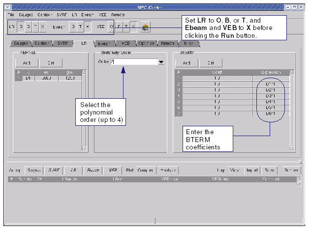

Build a uniformity
polynomial in MPC Center.
Procedure
- Click the LR tab
again (see Figure 1).
- Set LR to O, B, or T, and Ebeam and VEB to X.
Figure 1. LR Tab (BTERMS)
- In the LR tab, reset the Uniformity
Order to a nonzero integer. This represents the spatial uniformity,
or an attempt to map out the non-uniformity of CDs as a function
of position. This can be specified as a polynomial up to the 4th
order.
- Set the BTERMs. These are
constant BTERM coefficients (of pattern density and uniformity)
for the kernels. You need the following coefficient terms:
1 constant BTERM coefficient
1 for the diffusion kernel
5 for the first order terms
(x, y, x2, y2,
xy). You need to type in X, Y, X2, Y2 in the Coeff field, and XY
in the fields next to their coefficients.
This is equivalent to filling
in Uniformity Order and BTERM data in the Long Term model file form
(see “Long-Range Model File Format”).
- In MPC Center button bar,
set the run control so that only the LR options are enabled. Set LR to O (Optimize), Build (B), or T (Try), and Ebeam and VEB to X.
- Click the Run button to generate
the model. This produces an SVRF block that you can view in the SVRF tab, as well as
a sample .mod file (this is only to view, not to be used in the
rule file).
You can also see the model fit results at the bottom
of the screen in the LR page. If you wish to add further complexity
to your models for better fit results, you can add another kernel
and re-run the process.